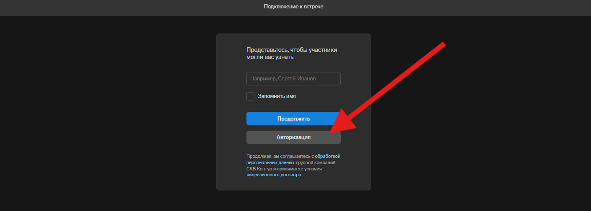

1
Вход в Контур Толк
Как авторизоваться в пространстве ИТМО
- Откройте приложение Толка или веб-версию по адресу itmo.ktalk.ru.
- Войдите через свою учетную запись ITMO ID.
- Если вы переходите по ссылке, то в открывшемся окне выберите опцию Авторизация и войдите через свою учетную запись ITMO ID
Для преподавателей рекомендуется приложение Толка: в нем доступно больше функций и удобнее работать с настройками встречи.
